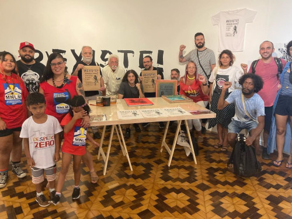

Conheça nosso propósito!
Atualmente temos a posse da ocupação Casa Amarela Quilombo Afro-Guarani no centro de São Paulo e estamos construindo o Ateliê Livre na ocupação Ksa Rosa, no centro de Porto Alegre, essa última ocupação é construída pelo movimento da População em Situação de Rua e com os Catadores de Reciclados
Além desse trabalho também realizamos ações culturais nas feiras orgânicas que acontecem em Porto Alegre (Bom Fim, Menino Deus, Praia de Ipanema e no Armazém do Campo) e estamos realizando um trabalho de pesquisa e construção de registro material e afetivo dos moradores do entorno da nascente do Rio dos Sinos, na cidade de Caraá, no Rio Grande do Sul.
. Dentro dessa proposta de amplificar as vozes de pessoas em situação de vulnerabilidade, destacamos nosso trabalho editorial, que conta com o livro de bolso “Okupa Alvorada” que conta a história dessa ocupação que aconteceu na zona sul de São Paulo em 2008 e foi publicada em parceria com a Editora Monstro dos Mares (Ponta Grossa-PR) e a editora Nigra Koro Distro (Rio de Janeiro) no ano de 2018.
Durante o ano ampliamos a parceria com o Musecom através de um circuito de oficinas de fanzine e criatividade em escolas e espaços pedagógicos em regiões periféricas e em situação de vulnerabilidade. Estas oficinas estão em andamento semanalmente e resultarão em um acervo a ser exposto no museu futuramente, além de gerar um documentário. O coletivo segue realizando oficinas em parceria com o museu Júlio de Castilho e com parceiros como o núcleo cultural da OAB, e tem agendado o lançamento de um livro para setembro.
Confira alguns dos materiais publicados: : Documentário “Todas as Mulheres do Mundo”, dirigido e realizado em oficinas com os moradores da Ocupação São João no ano de 2013. E o "Encontro da Rede de Comunidades Autogestionárias”, realizado a partir de relatos dos participantes de comunidades de Santa Maria, São Gabriel, Gravataí e Porto Alegre em 2015.